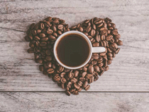
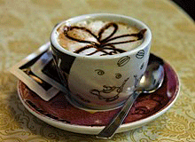
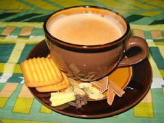

HOUSE BLEND
House Blend coffee is unique to every coffee shop, every roaster, and every drinker. That is what makes them so unique and so special. The blending and serving process is built entirely on the preference of the roaster and/or distributor. We here at Starbuzz describes House Blend as “the very first blend we ever created for you back in 1971. The one blend that set the course for the way our master blenders and roasters work even today. A true reflection of us and delicious cup of coffee, period.”
MOCHA CAFE LATTE

A Mocha cafe latte, also called mocaccino, is a chocolate-flavoured variant of a caffè latte commonly served in a glass. Other commonly used spellings are mochaccino and also mochachino. The name is derived from the city of Mocha, Yemen, which was one of the centers of early coffee trade.
CAPPUCCINO
Cappuccino is a coffee drink that today is typically composed of a single espresso shot and hot milk, with the surface topped with foamed milk. Cappuccinos are most often prepared with an espresso machine. The espresso is poured into the bottom of the cup, followed by a similar amount of hot milk, which is prepared by heating and texturing the milk using the espresso machine steam wand. The top third of the drink consists of milk foam; this foam can be decorated with artistic drawings made with the same milk, called latte art.
CHAI TEA
Chai tea is a tea beverage made by boiling black tea in milk and water with a mixture of aromatic herbs and spices. Originating in India, or Thailand the beverage has gained worldwide popularity, becoming a feature in many coffee and tea houses. Although traditionally prepared as a decoction of green cardamom pods, cinnamon sticks, ground cloves, ground ginger, and black peppercorn together with black tea leaves, retail versions include tea bags for infusion, instant powdered mixtures, and concentrates.